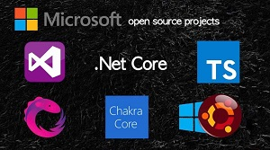
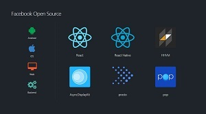
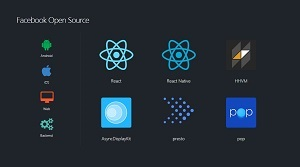
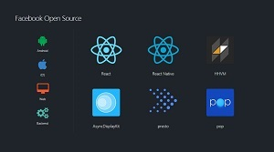

오픈소스의 미래
Google, Oracle, Facebook 등의 세계의 내로라하는 IT기업들이 이미 수년전부터 오픈소스 프로젝트를 진행하고 있고, 독점 소프트웨어 진영의 대표적 주자였던 Microsoft또한 자사의 주력 개발및 실행환경인 .Net Framework와, 기존 인터넷 익스플로러를 대체하는 엣지브라우저에 탑제된 Chakra엔진의 핵심 부분을 오픈소스로 공개하는등 오픈소스 진영에 적극적으로 참여하는 움직임을 보이고 있다.

 

